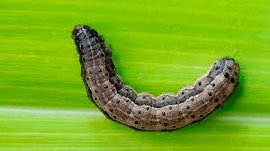

Lagarta do Trigo

Esta lagarta aparece nas lavouras de trigo em invernos secos e pouco frios, como por exemplo no norte do estado do Paraná, Mato Grosso do Sul e em latitudes inferiores.
Também é uma praga polífaga que se alimenta de gramíneas e outras famílias, dificultando o seu controle.
Combate
Controle da Lagarta-militar
Para o controle das lagartas também é ideal que se faça monitoramento.
Sendo assim, as amostragens devem ser semanais e é importante avaliar não somente as plantas, mas também o solo ao redor.
Para a lagarta-militar, o monitoramento deve ter início logo após a emergência das plantas e a tomada de decisão deve ser realizada com lagartas pequenas.
Com o espigamento, deve-se intensificar o monitoramento para lagartas-do-trigo e ainda fazer observações da redução da folha bandeira.
O controle biológico, tanto o natural como o aplicado, reduzirão efetivamente as lagartas desfolhadoras da lavoura.
Caso seja necessário o uso de inseticidas, prefira aqueles específicos para as lagartas e que sejam registrados no Mapa. Além disso, devem ser seletivos aos inimigos naturais.
Voltar
-Photoroom.png)